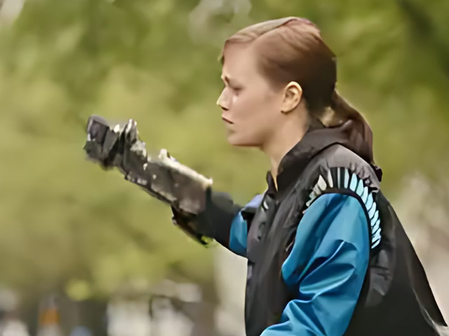
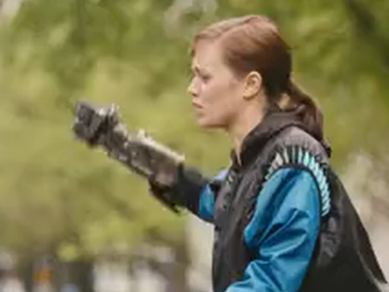
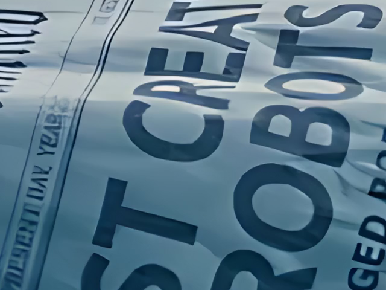
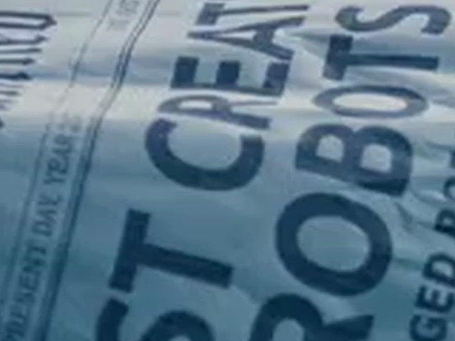

Actual exports from the app's free local upscaler. These live-action tests make edge cleanup easier to inspect than a small thumbnail. The slider compares ordinary Lanczos resizing with Real-ESRGAN on the exact same frame and crop. The still images are lossless PNGs.
These are controlled examples: high-resolution footage was cropped to 16:9, reduced to 360p or 540p and compressed at H.264 CRF 26 first. Both results use the same final H.264 settings. AI can smooth textures, alter letters or flicker between frames. The examples show selected cases, not a guarantee for every recording.
Look at the blue sleeve folds, shoulder trim and metallic arm. The AI result has cleaner edges, but also smoother skin and background texture.

Real-ESRGAN AI
Ordinary resize2.5 seconds · 24 fps · original audio · 640 × 360 input → 1920 × 1080 output. The video above shows the same crop throughout; the links contain the full frames.
Look at the letter outlines and paper folds. Cleaner outlines do not establish accurate text recovery: fine lettering can stay distorted or lose texture.

Real-ESRGAN AI
Ordinary resize2.5 seconds · 24 fps · original audio · 960 × 540 input → 3840 × 2160 output.
These earlier examples use smooth animated faces. At a small display size the difference can be hard to see. They remain available to show that the benefit depends on the footage.